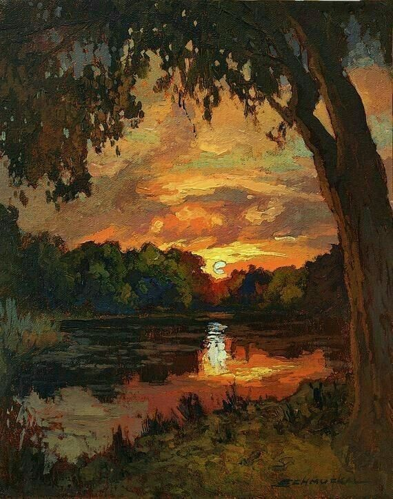
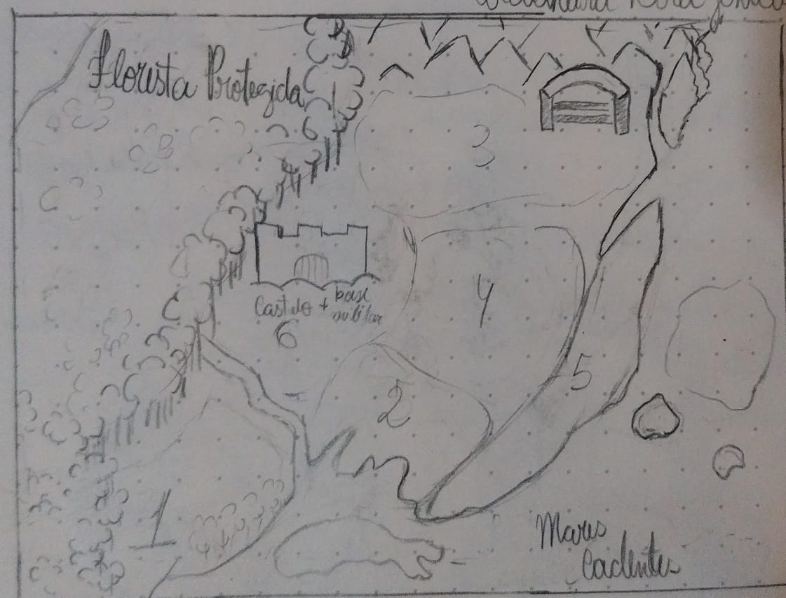

✦ os reinos ✦
🎇Onde tudo nasce e morre
Daqui o sangue dourado de um deus escorreu pelas terras do povo adormecido, manchando e marcando para sempre o começo da espereça.
✦ história
Inserir parágrafo I...
Inserir parágrafo II...
Inserir parágrafo III...
✦ cartografia

1- Pastorinho, 2- Salandrine, 3- Rancho Magnos, 4-Cidade Dourada, 5- Portal Celeste, 6- Cidade de Hélios
ANWAR
Cidade de Hélios
Sede da Família Real Polar e base militar do reino. Anwar é o coração pulsante do poder — refinada, serena, perfumada de jasmim. Paz e calmaria permeiam cada rua pavimentada, como se a própria cidade soubesse que carrega o peso de uma coroa.
ALIFA
Rancho Magnos
Administrada pela Família Magnos, é onde se forja a força do reino. O treinamento da guarda real, o adestramento dos animais e — mais notavelmente — a criação de dragões acontecem em seus vastos campos. O ar cheira a metal, suor e terra batida; os dragões caminham livres pelo terreno como se fossem cavalos domesticados.
YILDUN
Cidade Dourada
Administrada pela Família Midas, Yildun é o centro econômico do reino — barulhenta, perfumada de especiarias, tecidos novos e comidas quentes. Aqui acontecem as maiores feiras comerciais do Reino Polaris, e é aqui também que se produz o Ouro, a moeda oficial do reino.
URUDELOS
Salandrine
Administrada pela Família Willoen, Urudelos é a fonte principal de alimento do reino. Vilas costeiras aconchegantes, abastecidas pela abundância da Ilha da Baleia — o cheiro de peixe e água salgada é constante, mas ao cair da noite, a orla se torna estranhamente pacífica. O prato principal da região é a carne de salamandras gigantes.
KORCHAB
Cidade Celeste
Administrada pela Família Cecília, Korchab é o portal do reino para o mundo exterior. Desenvolvida, tumultuada, repleta de lojas e visitantes de outras terras — o cheiro de fumaça que paira no ar é quase arrepiante, como se a cidade nunca descansasse.
PERKAD
Pastorinho
Administrada pela Família Strix, Perkad é a cidade mais nova do Reino Polaris — ainda estabelecendo seu lugar. Vilas distantes entre si, campos abertos, ar fresco. Sua base é a agricultura e a pecuária, e há algo de promissor em sua vastidão ainda não inteiramente mapeada.
✦ elenco do reino
Inserir texto...
✦ tradições
Inserir texto...
LENDA
Inserir texto...
TRADIÇÃO
Inserir texto...
COSTUME
Inserir texto...
CRENÇA
Inserir texto...